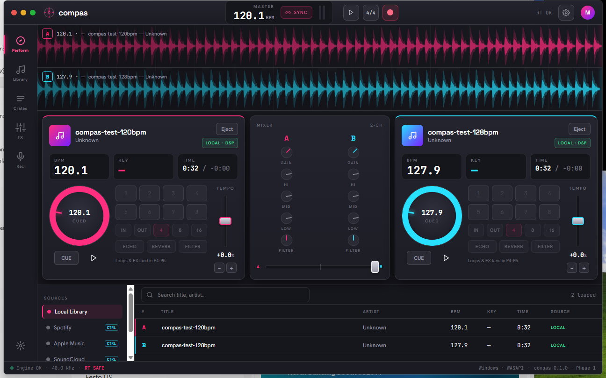

True DSP on local files
In-RAM decoding with a cubic-interpolated play-head: instant seek, varispeed, 3-band EQ, and an HPF/LPF filter — all real-time-safe.
Real-time · cross-platform · Rust core
Two decks, true DSP on your local files — beatgrid, key, EQ, filter, varispeed, key-lock, beat loops, jog-wheel scratch, and an echo + reverb FX rack. All real-time-safe.
Open-source · MIT · Windows, macOS & Linux installers via GitHub Releases

In-RAM decoding with a cubic-interpolated play-head: instant seek, varispeed, 3-band EQ, and an HPF/LPF filter — all real-time-safe.
Spectral-flux tempo + beat-phase detection draws a real grid; Krumhansl–Schmuckler key detection in Camelot notation.
A fixed NOW playhead with the track scrolling under it, beat-aligned grid, and 4–32 s zoom.
Match decks with one click, or ride the tempo fader and nudge by ear — vinyl-style varispeed by default.
Master-tempo key-lock (tempo without pitch), a draggable jog-wheel scratch, beat loops, hot cues, and an echo + reverb FX rack — all on the lock-free audio thread.
A Rust audio engine in a Tauri shell. Lock-free, allocation-free audio thread; small, quick, cross-platform.